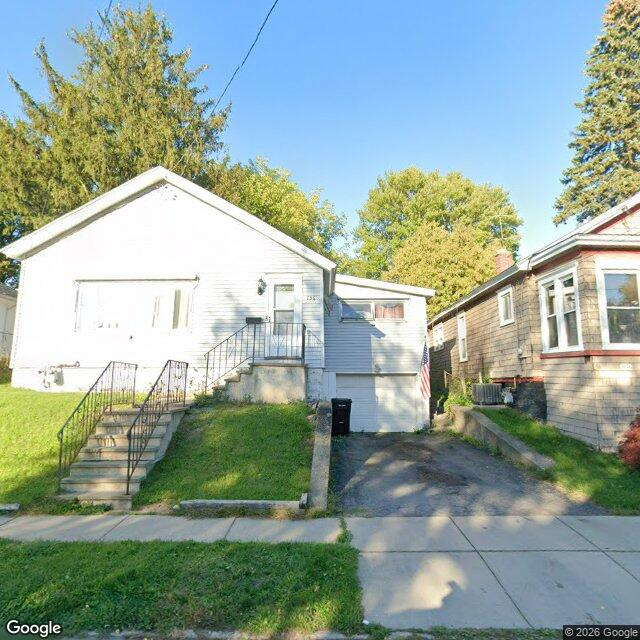

Property entry
136 Hood Ave
Published 2026-10-21T01:03:16+00:00
Parcel key: 005-02-510

City records
Matches use parcel IDs or normalized property addresses. Nearby properties are not treated as matches. Records may include historical or closed cases; check each record's status and dates. Publication dates are not source-data dates.
Vacant properties 0
No matches stored for this feed. The feed or address matching may be incomplete; this is not confirmation that no records exist.
Records refreshed 2026-10-27.
Rental registry 1
- Latitude
- 43.07394778
- Longitude
- -76.14358841
- NeedsRR
- Yes
- ObjectId
- 2253
- PropertyAddress
- 136 Hood Ave
- RR_contact_name
- Gary Richardson
Records refreshed 2026-10-27.
Code violations 1
- Latitude
- 43.07394778
- Longitude
- -76.14358841
- Neighborhood
- Court-Woodlawn
- ObjectId
- 147695
- SBL
- 005.-02-51.0
- complaint_address
- 136 Hood Ave
Records refreshed 2026-10-27.
Unfit properties 0
No matches stored for this feed. The feed or address matching may be incomplete; this is not confirmation that no records exist.
Records refreshed 2026-10-27.
AI image observations (unverified)
These observations are generated from an image, not an inspection or an official code finding. No human verification is recorded here.
Image capture date: Not recorded. The entry publication date does not establish the age of the image.
Automated image description
{ "summary": "The property features an elevated single-family residence with light-colored siding, a front entry accessed by concrete steps with railings, and a paved driveway leading to a lower-level entrance.", "property_type_guess": "single_family", "visible_conditions": [ "The house has light-colored, possibly white, horizontal siding.", "A set of concrete steps with black metal railings leads to the front door.", "A paved driveway slopes down to a lower-level garage or basement entrance on the right side of the house.", "The lawn areas appear to be maintained.", "Some foundation plantings are visible near the house.", "An American flag is displayed near the lower-level entrance.", "A black refuse bin is located near the lower-level entrance.", "Several windows, particularly on the front facade, appear to have internal coverings or obstructions." furlough", "condition_scores": { "roof": "not_visible", "siding_or_facade": "fair", "windows_doors": "fair", "porch_or_entry": "fair", "yard_or_lot": "good", "trash_debris": "none_visible", "vegetation_overgrowth": "none_visible" }, "visible_flags": { "boarded_windows_or_doors": "no", "fire_damage_visible": "no", "structural_damage_visible": "no", "vacancy_signs_visible": "no", "active_construction_visible": "no" }, "possible_unrecorded_issues": [ "Visible discoloration or staining on areas of the exterior siding.", "Several windows appear to have internal coverings or obstructions." ], "image_annotations": [ { "label": "Siding discoloration/wear", "reason": "Visible discoloration or staining on the white siding.", "bbox": { "x": 0.05, "y": 0.25, "width": 0.45, "height": 0.4 }, "confidence": "high" }, { "label": "Siding discoloration/wear", "reason": "Visible discoloration or staining on the white siding.", "bbox": { "x": 0.5, "y": 0.4, "width": 0.2, "height": 0.2 }, "confidence": "high" }, { "label": "Covered windows", "reason": "The large front window appears to have an internal covering or obstruction.", "bbox": { "x": 0.15, "y": 0.45, "width": 0.3, "height": 0.15 }, "confidence": "high" } ], "needs_human_review": false, "confidence": "high", "caveats": [ "The condition of the roof is not fully visible due to the image angle and tree cover." ] }
Property type guess: unclear
Visible conditions
- No items reported.
Condition scores
No structured condition scores available.
Visible flags
No structured visible flags available.
Possible image-only flags
- No items reported.
AI review boxes
- No items reported.
Review reasons
- No items reported.
Image quality
- Available
- True
- Bytes
- 92057
- Needs Rerun
- False
ACS tract context
Census Tract 4; Onondaga County; New York
- Housing units
- 1534
- Median gross rent
- 130600
- Median household income
- 66250
- Poverty rate
- 27.6
- Renter-occupied share
- 71.7
- Total population
- 4042
- Vacancy rate
- 4.6
OpenStreetMap nearby
Nearby map data is temporarily unavailable. This does not mean there are no mapped features.